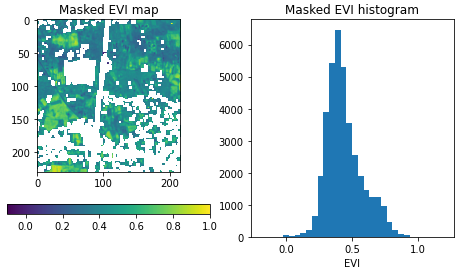

flowchart TD load_collection --> NDVI[calculate NDVI] load_collection --> cm[build cloud mask] NDVI --> mask[apply mask] cm --> mask mask --> aggregate_spatial load_geojson[load geometries] --> aggregate_spatial aggregate_spatial --> save_result
Getting started with the openEO Python client
This Getting Started guide will just give a small taste of using the openEO Python client library in the context of the Copernicus Data Space Ecosystem. Consult the official openEO Python client library documentation for more in-depth information and a broader coverage of its functionality.
Installation
Tip
As with any Python project, it is recommended to work in some kind of virtual environment (venv, virtualenv, conda, docker, …) to avoid interference with other projects or applications.
The openEO Python client library is available on PyPI and can easily be installed with a tool like pip, for example:
pip instal openeoThe client library is also available on Conda Forge and can be easily installed in a conda environment, for example:
conda install -c conda-forge openeo
Tip
See the official openeo installation docs for more details, alternative installation procedures or troubleshooting tips.
Exploring a back-end
For this tutorial we will use the openEO back-end of Copernicus Data Space Ecosystem, which is available at https://openeo.dataspace.copernicus.eu. We establish a connection to this back-end as follows:
import openeo
connection = openeo.connect("openeo.dataspace.copernicus.eu")The Connection object we created here is the central gateway to interact with the back-end:
- list data collections, available processes, file formats and other capabilities of the back-end
- start building your openEO algorithm from the desired data on the back-end
- execute and monitor (batch) jobs on the back-end
- etc.
EO Collections
EO data in openEO is organized in so-called collections, which are used as the input data for your openEO jobs (see the glossary for more info). Collections can be listed and inspected programmatically:
# List collections available on the openEO back-end
connection.list_collection_ids()
# Get detailed metadata of a certain collection
connection.describe_collection("SENTINEL2_L2A")However, it is often easier to browse collections through the openEO collection listing page or the collection listing sidebar of the openEO Web Editor.
openEO Processes
Processes in openEO are operations that can be applied on (EO) data (see the the openEO glossary for more info). For example: calculate the mean of an array, mask out pixels outside a given polygon or calculate spatial aggregations. The output of one process can be used as the input of another process, and by doing so, multiple processes can be connected that way in a larger “process graph”, as illustrated in this conceptual diagram:
While it is possible to programmatically list and inspect the available processes (e.g. connection.list_processes() with the openEO python client), it is recommended to just consult the process listing page, the process listing sidebar of the openEO Web Editor, or the official openeo.org processes listing.
Authentication
Basic metadata about collection and processes, as discussed above is publicly available and does not require being logged in. However, for downloading EO data or running processing workflows, it is necessary to authenticate so that permissions, resource usage, etc. can be managed properly.
Important
Make sure to complete your Copernicus Data Space Ecosystem registration before attempting to do the authentication explained below.
Once properly registered, you will be able to authenticate your connection handle in your Python code with Connection.authenticate_oidc(), just like this:
connection.authenticate_oidc()By default, the first time you call this
authenticate_oidc()method, a URL will be printed. Something like for example:Visit https://auth.example.com/device?user_code=EAXD-RQXV to authenticate.Visit this URL (click it or copy-paste it into your web browser) and follow the login flow using your Copernicus Data Space Ecosystem credentials.
TipYou can visit this URL with any browser you prefer to complete the login procedure (e.g. on your laptop or smartphone). It does not have to be a browser running on the same machine/network as your Python script/application.
Once the authentication is completed, your Python script will receive the necessary authentication tokens and print
Authorized successfully.Other times, when you still have valid (refresh) tokens on your system, it will not be necessary to go through the Copernicus Data Space Ecosystem login steps and you will immediately see
Authenticated using refresh token.
In any case, your connection is now authenticated and capable to make download/processing requests.
A more in-depth discussion of various authentication concepts is available in the openEO Python client documentation.
Working with Datacube
Now that we know how to discover the capabilities of the back-end and how to authenticate, let’s do some real work and process some EO data in a batch job. We’ll build the desired algorithm by working on so-called “Datacubes”, which is the central concept in openEO to represent EO data.
Creating a Datacube
The first step is loading the desired slice of a data collection with Connection.load_collection:
datacube = connection.load_collection(
"SENTINEL2_L2A",
spatial_extent={"west": 5.14, "south": 51.17, "east": 5.17, "north": 51.19},
temporal_extent = ["2021-02-01", "2021-04-30"],
bands=["B02", "B04", "B08"],
max_cloud_cover=85,
)This results in a Datacube object containing the “SENTINEL2_L2A” data restricted to the given spatial extent, the given temporal extend and the given bands .
Tip
You can also filter the datacube step by step or at a later stage by using the following filter methods:
datacube = datacube.filter_bbox(west=5.14, south=51.17, east=5.17, north=51.19)
datacube = datacube.filter_temporal(start_date="2021-02-01", end_date="2021-04-30")
datacube = datacube.filter_bands(["B02", "B04", "B08"])Still, it is recommended to always use the filters directly in load_collection to avoid loading too much data upfront.
Applying processes
By applying an openEO process on a datacube, we create a new datacube object that represents the manipulated data. The standard way to do this with the Python client is to call the appropriate Datacube object method. The most common or popular openEO processes have a dedicated Datacube method (e.g. mask, aggregate_spatial, filter_bbox, …). Other processes without a dedicated method can still be applied in a generic way. An on top of that, there are also some convenience methods that implement openEO processes is a compact, Pythonic interface.
For example, the min_time method implements a reduce_dimension process along the temporal dimension, using the max process as reducer function:
datacube = datacube.max_time()This creates a new datacube (we overwrite the existing variable), where the time dimension is eliminated and for each pixel we just have the minimum value of the corresponding timeseries in the original datacube.
See the Python client Datacube API for a more complete listing of methods that implement openEO processes.
Note
Still unsure on how to make use of processes with the Python client? Visit the official documentation on working with processes.
Execution
It’s important to note that all the datacube processes we applied up to this point are not actually executed yet, neither locally nor remotely on the back-end. We just built an abstract representation of the algorithm (input data and processing chain), encapsulated in a local Datacube object (e.g. the result variable above). To trigger an actual execution (on the back-end) we have to explicitly send this representation to the back-end.
Batch job execution
Most of the simple, basic openEO usage examples show synchronous downloading of results. This only works properly if the processing doesn’t take too long and is focused on a smaller area of interest. However, you have to use batch jobs for the heavier work (larger regions of interest, larger time series, more intensive processing).
# While not necessary, it is also recommended to give your batch job a descriptive title so it’s easier to identify in your job listing.
job = cube.execute_batch()This documentation mainly discusses how to programmatically create and interact with batch job using the openEO Python client library. The openEO API however does not enforce usage of the same tool for each step in the batch job life cycle.
For example: if you prefer a graphical, web-based interactive environment to manage and monitor your batch jobs, feel free to switch to an openEO web editor like openeo.dataspace.copernicus.eu/ at any time. After logging in with the same account you use in your Python scripts, you should see your batch jobs listed under the “Data Processing” tab. More information on using openEO web editor is discussed here.
Tip
The official openEO Python Client documentation has more information on batch job basics {target=“_blank”} or more detailed batch job (result) management
Full Example
In this chapter we will show a full example of an earth observation use case using the Python client.
A common task in earth observation is to apply a formula to a number of spectral bands in order to compute an ‘index’, such as NDVI, NDWI, EVI, … In this tutorial we’ll go through a couple of steps to extract EVI (enhanced vegetation index) values and timeseries
import openeo
# First, we connect to the back-end and authenticate.
con = openeo.connect("openeo.dataspace.copernicus.eu")
con.authenticate_oidc()
# Now that we are connected, we can initialize our datacube object with the area of interest
# and the time range of interest using Sentinel 1 data.
datacube = connection.load_collection(
"SENTINEL2_L2A",
spatial_extent={"west": 5.14, "south": 51.17, "east": 5.17, "north": 51.19},
temporal_extent = ["2021-02-01", "2021-04-30"],
bands=["B02", "B04", "B08"],
max_cloud_cover=85,
)
# By filtering as early as possible (directly in load_collection() in this case),
# we make sure the back-end only loads the data we are interested in and avoid incurring unneeded costs.
#From this data cube, we can now select the individual bands with the DataCube.band() method and rescale the digital number values to physical reflectances:
blue = sentinel2_cube.band("B02") * 0.0001
red = sentinel2_cube.band("B04") * 0.0001
nir = sentinel2_cube.band("B08") * 0.0001
# We now want to compute the enhanced vegetation index and can do that directly with these band variables:
evi_cube = 2.5 * (nir - red) / (nir + 6.0 * red - 7.5 * blue + 1.0)
# Now we can use the compact “band math” feature again to build a binary mask with a simple comparison operation:
# Select the "SCL" band from the data cube
scl_band = s2_scl.band("SCL")
# Build mask to mask out everything but class 4 (vegetation)
mask = (scl_band != 4)
# Before we can apply this mask to the EVI cube we have to resample it, as the “SCL” layer has a “ground sample distance” of 20 meter, while it is 10 meter for the “B02”, “B04” and “B08” bands. We can easily do the resampling by referring directly to the EVI cube.
mask_resampled = mask.resample_cube_spatial(evi_cube)
# Apply the mask to the `evi_cube`
evi_cube_masked = evi_cube.mask(mask_resampled)
# Because GeoTIFF does not support a temporal dimension, we first eliminate it by taking the temporal maximum value for each pixel:
evi_composite = evi_cube.max_time()
# Now we can download this to a local file:
evi_composite.download("evi-composite.tiff")Now, you can inspect the result for the EVI map.

User Defined Functions
If your use case can not be accomplished with the default processes of openEO, you can define a user defined function. Therefore, you can create a Python function that will be executed at the back-end and functions as a process in your process graph.
Detailed information about Python UDFs can be found in the official documentation as well as examples in the Python client repository.
Useful links
Additional information and resources about the openEO Python Client Library: